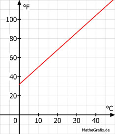

Lineare Funktionen Aufgabe 95 Temperaturen kann man in Grad Celsius °C oder in Grad Fahrenheit °F messen. 0°C entsprechen dabei 32°F und 100°C entsprechen 212°F. a) Eine Temperatur steigt um 1°C. Um wie viel °F ist sie dann gestiegen? b) Wie lautet die Abhängigkeit der Temperatur in °F von der in °C? c) Sie haben 41°C Fieber. Wie viel Grad sind das in °F? a) 212 °F - 32 °F ----------------- = 1,8 °F/°C 100 °C - 0 °C b) F = 1,8 * C + 32  c) F = 1,8 °F/°C * 41 °C + 32 °F F = 73,8 °F + 32 °F = 105,8 °F